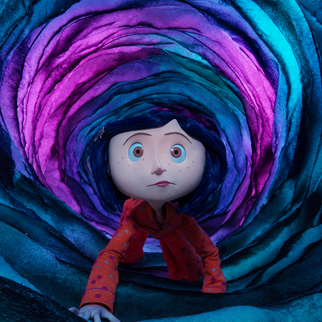

КОРАЛИНА В СТРАНЕ КОШМАРОВ

Страница 3. Цена идеальной сказки
Не всякое чудо создано для того, чтобы дарить счастье…
То, что казалось прекрасной мечтой, превращается в опасную ловушку.
Коралине предстоит проявить смелость и разгадать тайну другого мира, пока он не забрал у неё самое дорогое.